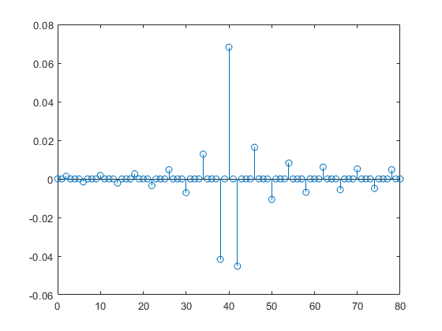

clc
clear
wp= [0.3*pi 0.7*pi];
ws= [0.2*pi 0.8*pi];
delp = 0.02;
dels = 0.05;
fs=1;
wp = wp/fs;
ws=ws/fs;
lfs= length(ws);
lfp= length(wp);
As = -20*log(dels);
tw=abs(wp(1)-ws(1));
if As<=21
disp('Rectangular window')
wn=@(n)(1);
N=ceil((4*pi/tw) -1);
if (rem(N,2)==0)
N=N+1;
end
elseif As>21 && As<44
disp('Hanning window')
N=ceil(8*pi/tw);
if (rem (N,2)==0)
N=N+1;
end
wn=@(n)(0.5*(1-cos(2*pi*n/(N-1))));
elseif As>=44
disp('Hamming window')
N=ceil(8*pi/tw);
if (rem (N,2)==0)
N=N+1;
end
wn=@(n)(0.54-0.46*cos(2*pi-n/(N-1)));
end
tao=(N-1)/2;
hd=@(w,n)((1/(2*pi))*exp(-w*tao*i)*exp(w*n*i));
if lfp==1 && lfs==1
if wp>ws
disp('High pass filter')
wc= (wp+ws)/2;
syms w n z ;
for n=0:1:N-1
hnd= int(hd(w,n), 'w',-pi, -wc) + int(hd(w,n), 'w' , wc, pi);
hd2=double(hnd);
hn(n+1)=hd2*wn(n);
end
hn
m = 0:1:N-1;
stem (m, hn)
else
disp('low pass filter')
wc= (wp+ws)/2;
syms w n z;
for n=0:1:N-1
hnd= int(hd(w,n), 'w', -wc, wc);
hd2=double(hnd);
hn(n+1)=hd2*wn(n);
end
hn;
m=0:1:N-1;
stem(m,hn)
end
elseif lfp==2 && lfs==2
if wp(1)>ws(1)
disp('Band pass filter')
wc1= (wp(1)+ws(1))/2;
wc2= (wp(2)+ws(2)) /2;
syms w n z
for n=0:1:N-1
hnd= int(hd(w,n),'w',-wc2, -wc1) + int(hd(w,n), 'w', wc1, wc2);
hd2=double(hnd);
hn(n+1) =hd2*wn(n);
end
hn;
m=0:1:N-1;
stem (m, hn)
else
disp('Band stop filter')
wc1=(wp(1) +ws(1))/2;
wc2= (wp(2) +ws(2))/2;
syms w n z
for n= 0:1: N-1
hnd= int(hd(w,n),'w',-pi,-wc2) +int(hd(w,n),'w',-wc1, wc1) +int(hd(w,n),'w', wc2, pi);
hd2=double(hnd);
hn(n+1)=hd2*wn(n);
end
hn;
m=0:1:N-1;
stem(m,hn)
end
end
Hamming window
Band pass filter
